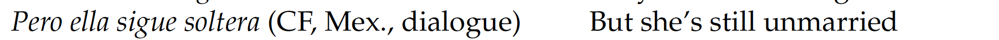
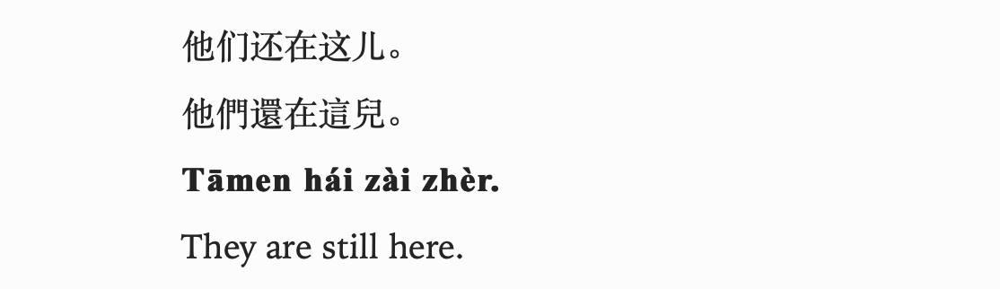
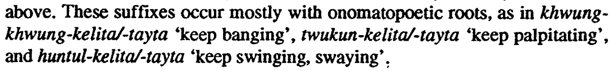
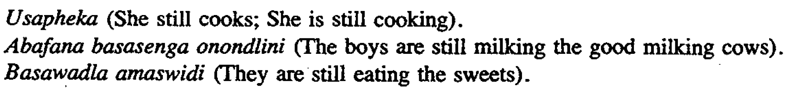
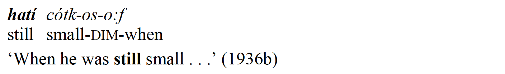
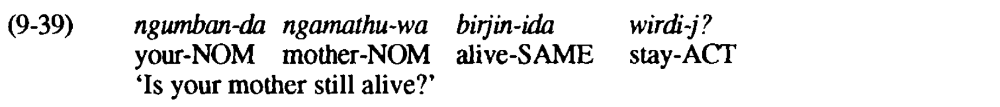
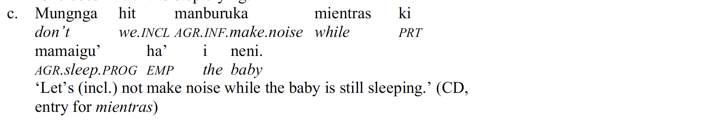
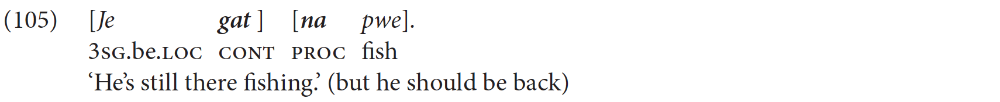

Examples
Screenshots of examples with continuative expressions.
1. Eurasia
Indo-European (> Italic)
Spanish (Butt … Rodríguez 2019:446)

The continuative marker: todavía.
Spanish (Butt … Rodríguez 2019:446)
The continuative marker: aún.
Spanish (Butt … Rodríguez 2019:457)

The continuative marker: seguir.
Spanish (Butt … Rodríguez 2019:457)
The continuative marker: continuar.
Sino-Tibetan
Mandarin Chinese (Ross and Ma 2017:88)

The continuative marker: hái.
Mandarin Chinese (Ross and Ma 2017:120)
The continuative marker: xiàqù.
Mandarin Chinese (Li and Thompson 1989:178)
The continuative marker: jìxù.
Tai-Kadai
Thai (Iwasaki and Ingkaphirom 2005:158)
The continuative marker: pay.
Thai (Higbie and Thinsan 2002:105)
The continuative marker: yang.


Nakh-Daghestanian
Lezgian (Haspelmath 1993:145)

The continuative marker: -zma/-nma.
Lezgian (Haspelmath 1993:210)
The continuative marker: hele.


Abkhaz-Adyge
Abaza (Klyagina and Panova 2019:10)

The continuative marker: -rḳʷ(a).
Abaza (Tabulova 1976:256)
The continuative marker: wẑəg’əj.
Koreanic
Korean (Sohn 1994:103)
The continuative marker: acik.
Korean (Sohn 1994:332)

The continuative marker: -keli / -tay.


2. Africa
Atlantic-Congo (> North-Central Atlantic)
Balanta-Ganja (Creissels and Biaye 2016:201)
The continuative marker: tígtà.
Atlantic-Congo (> Volta-Congo > North Volta-Congo)
Sango (Samarin 1970:105)

The continuative marker: ngba.
Sango (Nassenstein and Pasch 2016:114)
The continuative marker: de.

Atlantic-Congo (> Volta-Congo > Gur)
Northern Dagara (Mwinlaaru 2017:328)

The continuative marker: cãa.
Atlantic-Congo (> Volta-Congo > East Bantu > Corridor Bantu)
Nyakyusa-Ngonde (Persohn 2017:186)

The continuative marker: kaalɪ.
Atlantic-Congo (> Volta-Congo > East Bantu > Southern Bantu-Makua)
Zulu (Ziervogel … Taljaard 1976:91)

The continuative marker: sa-.
Atlantic-Congo (> Volta-Congo > Central-Western Bantu)
Yansi (Mayanga 1985:111)
The continuative marker: -binde-.
Afro-Asiatic (> Semitic)
North Levantine Arabic (Versteegh 2018:246)

The continuative marker: baʿda.


Afro-Asiatic (> Egyptian)
Coptic (Layton 2004:384)

The continuative marker: on.
Coptic (Elanskaya 2010:424)
The continuative marker: еti.
Mande
Gban (Fedotov 2015:4)

The continuative marker: lé‶.
Gban (Fedotov 2015:5)

The continuative marker: gɔ ̰ .
Central Sudanic
Ma’di (Blackings and Fabb 2003:247)

The continuative marker: ɔlʊ.
Ma’di (Blackings and Fabb 2003:495)
The continuative marker: adɨ.


3. North America
Otomanguean (> Eastern Otomanguean)
Isthmus Zapotec (Pickett … Cerqueda 2001:80)
The continuative marker: ru.
Isthmus Zapotec (Pickett 2007:97)
The continuative marker: de_yanna.
Otomanguean (> Western Otomanguean)
Querétaro Otomi (Palancar 2009:363)

The continuative marker: to’be.


Athabaskan-Eyak-Tlingit (> Athabaskan)
Navajo (Young and Morgan 1987:13)

The continuative marker: t’ahdii.
Navajo (Young and Morgan 1987:13)
The continuative marker: t’ah.
Mayan
Yucatec Maya (Bohnemeyer 2001:394)

The continuative marker: láailiʼ …-eʼ.
Yucatec Maya (Bohnemeyer 2001:350)

The continuative marker: sèegir.


Siouan
Lakota (Ullrich 2018:277)
The continuative marker: -akhe.
Lakota (Ullrich 2018:278)
The continuative marker: nahaŋhci / héčhena.
Eskimo-Aleut
Central Alaskan Yupik (Miyaoka 2012:1232)

The continuative marker: -gur.
Central Alaskan Yupik (Miyaoka 2012:922)
The continuative marker: cali.


Muskogean
Creek (Martin 2011:306)

The continuative marker: -i: (i)mônk-.
Creek (Martin 2011:150)

The continuative marker: hatí.

4. South America


Tupian
Paraguayan Guaraní (Gerasimov 2020:2)
The continuative marker: -ve.
Paraguayan Guaraní (Estigarribia 2020:234)

The continuative marker: gueteri.
Pano-Tacanan
Ese Ejja (Vuillermet 2012:478)

The continuative marker: -poki/ -pokya.
Ese Ejja (Vuillermet 2012:543)
The continuative marker: -so’o.

Nuclear-Macro-Je
Xavánte (Machado Estevam 2011:291)

The continuative marker: -uösi.
Xavánte (Machado Estevam 2011:107)
The continuative marker: (za)hadu.


Matacoan
Nivaclé (Fabre 2016:365)

The continuative marker: jôjje-clai.
Nivaclé (Fabre 2016:360)
The continuative marker: manlhe-e-sh.
Nambiquaran
Mamaindé (Eberhard 2009:359)

The continuative marker: naih.
Mamaindé (Eberhard 2009:407)

The continuative marker: -jãʔ (-ja / -ʔai / -jaʔna).
Chonan
Tehuelche (Fernández Garay 1998:143)

The continuative marker: -r.
Tehuelche (Fernández Garay 1998:295)

The continuative marker: keTš ~ keTx.

Araucanian
Mapudungun (Smeets 2008:170)
The continuative marker: pet´u.
Mapudungun (Smeets 2008:172)

The continuative marker: -ka.

5. Australia
Pama-Nyungan (> Desert Nyungic)
Ngarinman (Meakins and Nordlinger 2014:387)
The continuative marker: =rni.
Pama-Nyungan (> Southeastern Pama-Nyungan)
Ngiyambaa (Donaldson 1977:354)

The continuative marker: guwayu-bu.
Pama-Nyungan (> South-West Pama-Nyungan)
Martuthunira (Dench 1995:130)

The continuative marker: waruu / waruul.
Martuthunira (Dench 1995:283)
The continuative marker: parilha.

Worrorran
Worrorra (Clendon 2014:238)
The continuative marker: wali.
Worrorra (Clendon 2014:268)
The continuative marker: weni-nyine.
Worrorra (Clendon 2014:269)
The continuative marker: -aanjanu.
Mirndi
Wambayan (Nordlinger 1998:178)

The continuative marker: mirra.
Wambayan (Nordlinger 1998:206)

The continuative marker: =nima.
Iwaidjan Proper
Mawng (Singer 2006:342)
The continuative marker: akut.
Mawng (Singer 2006:89)
The continuative marker: angkat.


Tangkic
Kayardild (Evans 1995:391)

The continuative marker: =(i)da.
Kayardild (Evans 1995:321)

The continuative marker: wirdija.
Bunaban
Gooniyandi (McGregor 1990:464)
The continuative marker: =nyali.
Gooniyandi (McGregor 1990:511)
The continuative marker: wamba.

Northern Daly
Mullukmulluk (Birk 1976:32)
The continuative marker: way.
Mullukmulluk (Birk 1976:32)

The continuative marker: tYin-taŋ-way.

6. Papunesia
Austronesian (> Malayo-Polynesian > Celebic)
Tukang Besi North (Donohue 1999:174)

The continuative marker: -ho.
Austronesian (> Malayo-Polynesian)
Chamorro (Chung 2020:406)

The continuative marker: trabiha.
Chamorro (Chung 2020:344)

The continuative marker: ha’.
Austronesian (> Malayo-Sumbawan)
Standard Indonesian (Sneddon … Ewing 2010:206)

The continuative marker: masih.
Austronesian (> Malayo-Polynesian > Greater Central Philippine)
Tagalog (Schachter and Otanes 1972:416)

The continuative marker: pa.
Austronesian (> Malayo-Polynesian > Oceanic > New Caledonian)
Nêlêmwa-Nixumwak (Bril 2016:93)
The continuative marker: gaa.
Nêlêmwa-Nixumwak (Bril 2016:95)

The continuative marker: gat.
Austronesian (> Malayo-Polynesian > Oceanic > Central Vanuatu)
Dakaka (Prince 2012:179)

The continuative marker: ngabak.
Austronesian (> Malayo-Polynesian > Polynesian)
Tuvalu (Besnier 2000:488)

The continuative marker: koi.
Nuclear Trans New Guinea (> Madang)
Kesawai (Priestley 2008:382)

The continuative marker: =apaie + te ‘do’ / deictic verb.


Timor-Alor-Pantar
Bunak (Schapper 2010:501)
The continuative marker: taq.
Bunak (Schapper 2010:458)
The continuative marker: liol.

Dagan
Daga (Murane 1974:155)

The continuative marker: -an.
Daga (Murane 1974:197)
The continuative marker: yaogi.
South Bougainville
Siwai (Onishi 1994:159)

The continuative marker: kotonoko.
Siwai (Onishi 1994:500)
The continuative marker: tu(h) ‘be’ + participle.


References